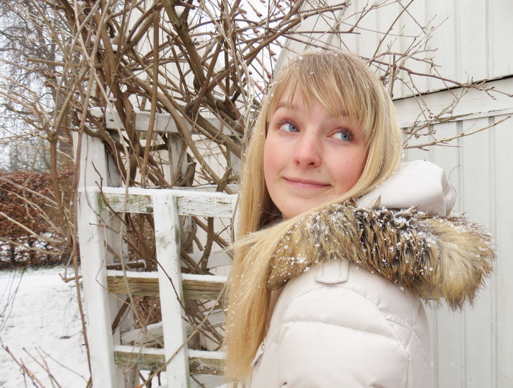

En nørd, der er stolt af at være det
Mit navn er Rose Demskov og jeg har i mange år øvet mig i at forstå tegningens kunst. Jeg ved mange tænker, det at tegne kun er for børn, men i virkeligheden lægger der rigtig meget teori bag det at illusstrere og det kræver mange års øvelse at kunne få ting i sit hoved til at ligne det samme på papir. Det smukke ved illustrationer er at man kan fortælle en historie uden ord. Ved brug af den rigtige komposition og farvekombination kan billede skabe følelser i mennesker og nogle gange få dem helt til at glemme deres omgivelser. Dette er min passion og jeg er stolt af det jeg er i stand til at kreere i dag. Ønsker du også at vække noget til live gennem illustrationer? så kontakt mig endelig.